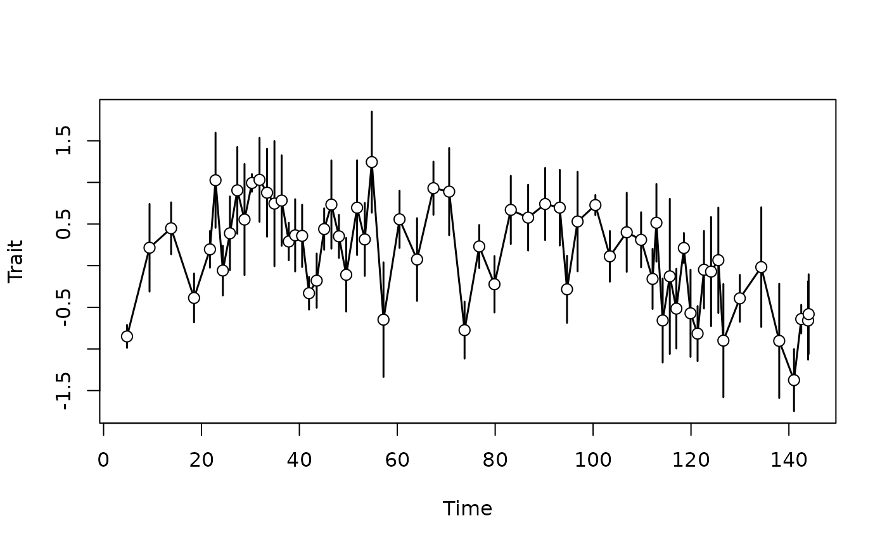

Usage with the paleoTS and evoTS package
Source:vignettes/paleoTS_functionality.Rmd
paleoTS_functionality.RmdThis vignette explain how to link the StratPal package
with the paleoTS and evoTS packages (Hunt 2006, Voje 2023). For details on the
underlying data structures, see
vignette("StratPal_docs").
Quick summary
To combine the StratPal and the
paleoTS/evoTS packages,
- simulate trait evolution using the functions with suffix
_sl(specimen level), optionally specifying the additional parameters for intrapopulation variance and number of specimens - build your pipelines as before (e.g., as described in
vignette("phenotypic_evolution")) - turn the result into
paleoTSformat usingreduce_to_paleoTS - further analyze or plot the results using the
paleoTSorevoTSpackage
Note that simulation of multivariate phenotypic evolution as provided
by the evoTS package is not yet implemented on specimen
level. If you are interested in this functionality please contact the
developer.
Motivation
The paleoTS package allows to easily analyze
paleontological time series, and StratPal can be connected
to it to study how ecological, taphonomic, and stratigraphic effects
change our inferences about the tempo and mode of evolution.
The paleoTS package defines its own paleoTS
format to store time series. It is a summary format, as it combines
trait values measured in multiple specimens into an intrapopulation
variance. Because taphonomic and ecological effects act on individual
specimens, they can not be modeled directly on the paleoTS
format. To circumvent this problem, we introduce a
pre_paleoTS format that models trait evolution on the
specimen level. Stratigraphic, taphonomic, and ecological effects can
act on this format. After all these effects have been applied, we can
reduce this data format into the standard paleoTS format,
and then analyze it with the standard toolbox of the
paloeTS/evoTS packages.
Modeling trait evolution on specimen level, complexity reduction, and plotting
Functions to model trait evolution on specimen level have the suffix
_sl, standing for “specimen level”. Internally, they are of
S3 class pre_paleoTS. In addition to the options provided
to simulate mean trait values, you can simulate strict stasis using
strict_stasis_sl. All functions have the same
parametrization as the as the other functions for simulating trait
evolution, which simulate mean trait evolution. In addition, they take
two additional parameters: intrapop_var for the variance of
the population around the mean trait value, and
n_per_sample for the number of specimens per sampling
location.
pre_paleoTS results can be converted to the
paleoTS format using the function
reduce_to_paleoTS. After this you can plot them with the
standard plotting procedure from paleoTS using plot (resp,
plot.paleoTS). Note that you can not plot
pre_paloeTS objects directly, only after conversion to
paleoTS format.
library(StratPal)
library(paleoTS) # needed for plotting
strict_stasis_sl(t = 1:4) |> # simulate strict stasis on specimen level in `pre_paleoTS` format
reduce_to_paleoTS() |> # convert pre_paleoTS to paleoTS
plot() # plotModeling of ecological, taphonomic, and stratigraphic effects
Modeling of niches, taphonomic effects, and stratigraphic biases
works on pre_paleoTS objects identical to how it is
described in the vignettes on event data and modeling phenotypic
evolution. As example, we plot a random walk 2 km offshore with 5
specimens per sampling location:
library(admtools) # load admtools for stratigraphic transformation
adm = tp_to_adm(t = scenarioA$t_myr, # define age-depth model
h = scenarioA$h_m[,"2km"],
L_unit = "m",
T_unit = "Myr")
set.seed(42) # set seed for reproducibility
seq(min_time(adm), max_time(adm), by = 0.01) |> # sample every 0.01 Myr
random_walk_sl(n_per_sample = 5) |> # simulate random walk on specimen level
time_to_strat(adm) |> # transform into stratigraphic domain
reduce_to_paleoTS() |> # transform into paleoTS format
plot() # plot
Of course you can also immediately add functions from
paleoTS to the pipeline, e.g. to fit models of phenotypic
evolution from the simulated data:
set.seed(42) # set seed for reproducibility
seq(min_time(adm), max_time(adm), by = 0.01) |> # sample every 0.01 Myr
random_walk_sl(n_per_sample = 5) |> # simulate random walk on specimen level
time_to_strat(adm) |> # transform into stratigraphic domain
reduce_to_paleoTS() |> # transform into paleoTS format
fit3models() # fit 3 models to time series
#> Warning in
#> fit3models(reduce_to_paleoTS(time_to_strat(random_walk_sl(seq(min_time(adm), :
#> Sample variances not equal (P = 0 ); consider using argument pool=FALSE
#>
#> Comparing 3 models [n = 64, method = Joint]
#>
#> logL K AICc dAICc Akaike.wt
#> GRW -47.74893 3 101.8979 1.646129 0.305
#> URW -48.02751 2 100.2517 0.000000 0.695
#> Stasis -57.64831 2 119.4933 19.241610 0.000References
Hunt, Gene. 2006. “Fitting and Comparing Models of Phyletic Evolution: Random Walks and Beyond.” Paleobiology. https://doi.org/10.1666/05070.1.
Voje, Kjetil L. 2023. “Fitting and Evaluating Univariate and Multivariate Models of Within-Lineage Evolution.” Paleobiology. https://doi.org/10.1017/pab.2023.10.